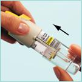

RÉSUMÉ DES CARACTÉRISTIQUES DU PRODUIT
ANSM - Mis à jour le : 22/05/2014
 Ce médicament fait l’objet d’une surveillance supplémentaire qui permettra l’identification rapide de nouvelles informations relatives à la sécurité. Les professionnels de la santé déclarent tout effet indésirable suspecté. Voir rubrique 4.8 pour les modalités de déclaration des effets indésirables.
Ce médicament fait l’objet d’une surveillance supplémentaire qui permettra l’identification rapide de nouvelles informations relatives à la sécurité. Les professionnels de la santé déclarent tout effet indésirable suspecté. Voir rubrique 4.8 pour les modalités de déclaration des effets indésirables.
STRIVERDI RESPIMAT 2,5 microgrammes/dose, solution pour inhalation
2. COMPOSITION QUALITATIVE ET QUANTITATIVE
(Sous forme de chlorhydrate d’olodatérol)
Pour une dose délivrée
La dose délivrée correspond à la quantité d’olodatérol délivrée à la sortie de l’embout buccal.
Pour la liste complète des excipients, voir rubrique 6.1.
Solution pour inhalation limpide et incolore.
4.1. Indications thérapeutiques
4.2. Posologie et mode d'administration
Voie inhalée exclusivement.
La cartouche contenant la solution pour inhalation ne peut être utilisée qu’avec l’inhalateur RESPIMAT.
Adultes
La posologie recommandée chez l’adulte est de 5 microgrammes d’olodatérol, soit deux bouffées administrées à l'aide de l'inhalateur RESPIMAT en une prise par jour, à heure fixe dans la journée.
Ne pas dépasser la posologie recommandée.
Sujets âgés :
STRIVERDI RESPIMAT peut être utilisé chez les sujets âgés sans adaptation de la posologie.
Insuffisance hépatique :
En cas d’insuffisance hépatique légère à modérée, STRIVERDI RESPIMAT peut être utilisé sans adaptation de la posologie.
Il n’existe pas de données concernant l’administration de STRIVERDI RESPIMAT chez les patients atteints d’insuffisance hépatique sévère.
Insuffisance rénale :
En cas d’insuffisance rénale, STRIVERDI RESPIMAT peut être utilisé sans adaptation de la posologie. Les données relatives à l'utilisation de STRIVERDI RESPIMAT chez les patients atteints d’insuffisance rénale sévère sont limitées.
Population pédiatrique :
Il n’y a pas de justification à l'utilisation de STRIVERDI RESPIMAT dans la population pédiatrique (moins de 18 ans).
Mode d’administration
Pour une administration correcte du médicament, le médecin ou un autre professionnel de santé devra s’assurer du bon usage de l’appareil par le patient.
|
Instructions destinées aux patients pour l’utilisation et la manipulation |
||||
|
|
||||
|
Inhalateur STRIVERDI RESPIMAT et cartouche STRIVERDI RESPIMAT 1) Insertion de la cartouche Les étapes suivantes 1 à 6 sont nécessaires avant la première utilisation : |
||||
|
1 |
1. En maintenant le capuchon jaune (A) fermé, appuyer sur le cliquet de sécurité (E) tout en retirant la base transparente (G). |
|||
|
2a |
2. Sortir la cartouche (H) de la boîte. Pousser l'extrémité la plus étroite de la cartouche dans l'inhalateur jusqu'à ce qu'elle s'enclenche. |
|||
|
2b |
Pousser fermement le fond de la cartouche contre une surface solide afin qu’elle pénètre au maximum dans l’inhalateur. La cartouche dépassera de l’inhalateur, la bande argentée du bas de la cartouche étant toujours visible. Ne pas retirer la cartouche lorsqu’elle a été insérée dans l’inhalateur. |
|||
|
 |
3 |
3. Remettre en place la base transparente (G). Ne plus retirer la base transparente. |
||
|
2) Préparation de l’inhalateur STRIVERDI RESPIMAT pour la première utilisation |
||||
|
4 |
4. Maintenir l'inhalateur STRIVERDI RESPIMAT verticalement, avec le capuchon jaune (A) fermé. Tourner la base (G) dans la direction des flèches noires imprimées sur l'étiquette jusqu'à entendre un déclic (un demi-tour).
|
|||
|
5 |
5. Ouvrir le capuchon jaune (A) jusqu'à ce qu'il s'ouvre complètement avec un claquement. |
|||
|
6 |
6. Diriger l'inhalateur STRIVERDI RESPIMAT en direction du sol. Puis appuyer sur le bouton de libération de la dose (D). Fermer le capuchon jaune (A). Répéter les étapes 4, 5 et 6 jusqu'à ce qu'un nuage soit visible. Puis répéter les étapes 4, 5 et 6 trois autres fois pour que l'inhalateur soit prêt à être utilisé. L’inhalateur STRIVERDI RESPIMAT est maintenant prêt à l'emploi. Ces étapes n'affecteront pas le nombre de doses disponibles. Après cette préparation, l’inhalateur STRIVERDI RESPIMAT pourra délivrer 60 bouffées (30 jours de traitement.) |
|||
|
L'inhalateur ne sera utilisé qu’UNE SEULE FOIS DANS LA JOURNEE. Lors de chaque utilisation, prendre DEUX BOUFFÉES. |
||||
|
I |
I. Maintenir l'inhalateur STRIVERDI RESPIMAT en position verticale, avec le capuchon jaune (A) fermé, afin d'éviter la libération accidentelle d'une dose. Tourner la base (G) dans la direction des flèches noires imprimées sur l'étiquette jusqu'à entendre un déclic (un demi-tour). |
|||
|
II |
II. Ouvrir le capuchon jaune (A) jusqu'à ce qu'il s'ouvre complètement (avec un claquement). Expirer lentement et complètement, puis fermer les lèvres autour de l'extrémité de l’embout buccal sans recouvrir les prises d'air (C). Diriger l’inhalateur STRIVERDI RESPIMAT vers le fond de la gorge. Tout en inspirant lentement et profondément par la bouche, appuyer sur le bouton de libération de la dose (D), et continuer d'inspirer lentement aussi longtemps que possible. Retenir sa respiration pendant 10 secondes ou aussi longtemps que possible sans être gêné. |
|
||
|
|
III. Répéter les étapes I et II afin de recevoir la dose complète. Cet inhalateur ne sera utilisé qu’UNE SEULE FOIS DANS LA JOURNEE pour administrer les 2 bouffées. Fermer le capuchon jaune jusqu’à l’utilisation de l’inhalateur STRIVERDI RESPIMAT le jour suivant. Si l’inhalateur STRIVERDI RESPIMAT n’a pas été utilisé pendant plus de 7 jours, libérer une bouffée vers le sol. Si l’inhalateur STRIVERDI RESPIMAT n’a pas été utilisé pendant plus de 21 jours, reprendre les étapes 4 à 6 jusqu’à ce qu’un nuage soit visible. Puis, répéter les étapes 4 à 6 trois autres fois. |
|||
|
Quand se procurer un nouvel inhalateur STRIVERDI RESPIMAT ? |
||||
|
L'inhalateur STRIVERDI RESPIMAT contient 60 bouffées (30 jours de traitement). L'indicateur de doses montre approximativement la quantité de médicament restant dans l’inhalateur. Lorsque l'indicateur entre dans la zone rouge de l'échelle, il reste suffisamment de médicament pour environ sept jours de traitement (14 bouffées). C'est le moment où le patient devra renouveler la prescription pour un nouvel inhalateur STRIVERDI RESPIMAT. Lorsque l'indicateur de doses atteint la fin de l'échelle rouge (c'est-à-dire que l'ensemble des 60 bouffées auront été administrées), l'inhalateur STRIVERDI RESPIMAT est vide et se bloque automatiquement. A ce stade, la base ne peut plus être tournée. L’inhalateur STRIVERDI RESPIMAT doit être jeté au plus tard après trois mois d’utilisation, même si la totalité du médicament n’a pas été utilisée. |
||||
|
Comment entretenir l’inhalateur ? Nettoyer l’embout buccal, y compris la partie métallique à l’intérieur de l’embout buccal, avec un linge ou un tissu humide uniquement, au moins une fois par semaine. Une décoloration mineure de l’embout buccal n’affecte pas les performances de l’inhalateur STRIVERDI RESPIMAT. Le cas échéant, essuyer l’extérieur de l’inhalateur STRIVERDI RESPIMAT avec un linge humide. |
||||
4.4. Mises en garde spéciales et précautions d'emploi
STRIVERDI RESPIMAT ne doit pas être utilisé chez les patients asthmatiques. L’efficacité et la sécurité à long terme de l'olodatérol n’ont pas été étudiées chez les patients asthmatiques.
Bronchospasme aigu
STRIVERDI RESPIMAT est utilisé en traitement bronchodilatateur continu quotidien en une prise par jour; il ne doit pas être utilisé en traitement de secours pour traiter des épisodes aigus de bronchospasme.
Hypersensibilité
Comme avec d'autres médicaments, des réactions d'hypersensibilité immédiates peuvent survenir après l’administration de STRIVERDI RESPIMAT.
Bronchospasme paradoxal
Comme avec tout médicament administré par voie inhalée, l’inhalation de STRIVERDI RESPIMAT peut entraîner un bronchospasme paradoxal pouvant engager le pronostic vital. En cas de bronchospasme paradoxal, le traitement par STRIVERDI RESPIMAT doit être arrêté immédiatement et remplacé par un autre traitement.
Effets systémiques
Les agonistes β2-adrénergiques de longue durée d’action doivent être administrés avec prudence chez les patients présentant des affections cardio-vasculaires, en particulier une cardiopathie ischémique, une décompensation cardiaque sévère, une arythmie cardiaque, une cardiomyopathie obstructive hypertrophique, une hypertension ou un anévrisme, chez les patients présentant des épisodes convulsifs ou une thyrotoxicose, chez les patients présentant un allongement connu ou suspecté de l'intervalle QT (par exemple QT > 0,44 secondes) ainsi que chez les patients développant des réactions indésirables aux amines sympathomimétiques.
Les patients ayant des antécédents d'infarctus du myocarde dans l'année précédente, une arythmie cardiaque instable ou susceptible d'engager le pronostic vital, hospitalisés pour insuffisance cardiaque au cours de l'année précédente ou présentant des épisodes de tachycardie paroxystique (> 100 battements par minute) ont été exclus des essais cliniques. Le recul est donc limité pour ces groupes de patients. STRIVERDI RESPIMAT doit être utilisé avec prudence dans ces groupes de patients.
Effets cardiovasculaires
Comme les autres agonistes β2-adrénergiques, l’olodatérol peut provoquer chez certains patients des effets cardiovasculaires cliniquement significatifs, se manifestant par des augmentations de la fréquence cardiaque, de la pression artérielle et/ou des symptômes cliniques. Dans ce cas, il peut être nécessaire d’interrompre le traitement. De plus, des modifications de l’électrocardiogramme (ECG) telles qu’un aplatissement de l’onde T et un sous-décalage du segment ST ont été rapportées avec les agonistes β-adrénergiques, mais la signification clinique de ces observations est inconnue.
Hypokaliémie
Les agonistes β2-adrénergiques peuvent induire chez certains patients une hypokaliémie significative, qui peut entraîner des effets indésirables cardiovasculaires. La diminution de la kaliémie est généralement transitoire et ne nécessite pas de supplémentation. Chez les patients présentant une BPCO sévère, l’hypokaliémie peut être potentialisée par l’hypoxie et par des traitements concomitants (voir rubrique 4.5), ce qui augmente le risque de survenue d'arythmies cardiaques.
Hyperglycémie
L’inhalation de doses élevées d’agonistes β2-adrénergiques peut entraîner des augmentations de la glycémie.
Anesthésie
La prudence est recommandée si une intervention chirurgicale nécessitant l'utilisation d'anesthésiques à base d'hydrocarbures halogénés est prévue, en raison de l'augmentation du risque de survenue d'effets indésirables cardiaques des bronchodilatateurs bêta agonistes.
STRIVERDI RESPIMAT ne doit pas être utilisé en association avec d'autres médicaments contenant des agonistes β2-adrénergiques de longue durée d'action.
Il convient d'informer les patients qui prenaient des agonistes β2-adrénergiques de courte durée d’action en inhalation de manière régulière (par exemple quatre fois par jour) de ne plus les utiliser que pour le soulagement des symptômes respiratoires aigus.
4.5. Interactions avec d'autres médicaments et autres formes d'interactions
L'administration concomitante d'autres médicaments adrénergiques (seuls ou dans le cadre d'un traitement en association) peut potentialiser les effets indésirables de STRIVERDI RESPIMAT.
+ Dérivés xanthiques, stéroïdes ou diurétiques
Un traitement concomitant par des dérivés xanthiques, des stéroïdes ou des diurétiques non épargneurs du potassium est susceptible de potentialiser les effets hypokaliémiants des agonistes adrénergiques (voir rubrique 4.4).
+ Bêta-bloquants
Les bêta-bloquants peuvent diminuer ou antagoniser l'effet de STRIVERDI RESPIMAT. STRIVERDI RESPIMAT ne doit donc pas être administré avec des bêta-bloquants (y compris en collyres) sauf nécessité absolue. Dans ce cas, l’utilisation de bêta-bloquants cardiosélectifs pourra être envisagée mais avec prudence.
+ Inhibiteurs de la monoamine oxydase (IMAO) et antidépresseurs tricycliques, médicaments qui prolongent l'intervalle QTc
Les inhibiteurs de la monoamine oxydase ou les antidépresseurs tricycliques, ou d'autres médicaments connus pour prolonger l'intervalle QTc, peuvent potentialiser l'action de STRIVERDI RESPIMAT sur le système cardio-vasculaire.
Interactions pharmacocinétiques
Il n'a pas été observé d'effet significatif sur l’exposition systémique à l’olodatérol dans les études d’interaction pharmacocinétique étudiant l'effet de l'administration concomitante de fluconazole, utilisé comme modèle d’inhibiteur du CYP 2C9.
L’administration concomitante du kétoconazole qui est un inhibiteur puissant de la P‑gp et du cytochrome P (CYP), a augmenté l’exposition systémique à l’olodatérol d’environ 70%. Il n'y a pas lieu d'envisager une adaptation de la dose.
L’administration concomitante de l’olodatérol avec le tiotropium n'a pas entrainé d'effet significatif sur l'exposition systémique des deux médicaments.
Les études conduites in vitro n'ont pas mis en évidence d'effet inhibiteur de l'olodatérol sur les enzymes du CYP ni sur les transporteurs des médicaments aux concentrations plasmatiques atteintes en pratique clinique.
Il n'existe pas de données concernant l'utilisation de STRIVERDI RESPIMAT chez la femme enceinte. Les études effectuées chez l'animal n’ont pas mis en évidence d'effets délétères directs ou indirects sur la reproduction à des niveaux d’exposition systémiques similaires à ceux observés aux doses thérapeutiques (voir rubrique 5.3).
Par précaution, il est préférable d’éviter l’utilisation de STRIVERDI RESPIMAT pendant la grossesse.
Comme les autres agonistes β2-adrénergiques, l’olodatérol peut inhiber le travail au moment de l’accouchement par effet relaxant sur le muscle lisse utérin.
Allaitement
Aucune donnée clinique n'est disponible concernant des femmes exposées à l'olodatérol pendant l'allaitement.
Le passage de l'olodatérol et de ses métabolites dans le lait maternel n’est pas connu. Les données de pharmacocinétique/toxicologie disponibles chez les animaux ont mis en évidence l’excrétion de l'olodatérol et/ou de ses métabolites dans le lait.
Administré à la dose de 5 microgrammes par jour, l'exposition systémique à l'olandatérol et à ses métabolites est négligeable chez la femme qui allaite. Par conséquent, aucun effet significatif n'est attendu chez le nouveau-né/nourrisson allaité.
La décision d’interrompre l’allaitement ou bien le traitement avec STRIVERDI RESPIMAT doit prendre en compte le bénéfice de l’allaitement pour l’enfant par rapport au bénéfice du traitement pour la femme.
Fertilité
Aucune donnée clinique sur la fertilité n'est disponible pour STRIVERDI RESPIMAT. Les études précliniques réalisées avec l'olodatérol n'ont pas montré d'effet indésirable sur la fertilité.
4.7. Effets sur l'aptitude à conduire des véhicules et à utiliser des machines
Les effets sur l’aptitude à conduire des véhicules et à utiliser des machines n’ont pas été étudiés.
Cependant, il convient d'avertir les patients que des sensations vertigineuses ont été rapportées au cours des essais cliniques et qu'ils doivent donc être prudents s'ils conduisent ou utilisent des machines. Si un patient présente des sensations vertigineuses, il doit éviter de réaliser des tâches qui peuvent être dangereuses, comme conduire ou utiliser des machines.
a. Résumé du profil de sécurité
Les réactions indésirables le plus fréquemment rapportées à la dose recommandée ont été : rhinopharyngite, sensations vertigineuses, hypertension, éruption cutanée et arthralgie. Ces réactions ont été en général d'intensité légère ou modérée.
b. Tableau résumé des effets indésirables
Les fréquences des effets indésirables présentées ci-dessous sont basées sur l'incidence des effets indésirables (c'est-à-dire les événements imputables à l'olodatérol) observés dans le groupe olodatérol 5 microgrammes (1 035 patients), regroupés à partir de 6 études cliniques conduites en groupes parallèles contrôlées contre placebo, incluant des patients présentant une BPCO, dont les durées de traitement étaient comprises entre 4 et 48 semaines.
La fréquence est définie selon la classification conventionnelle :
Très fréquent (≥1/10) ; fréquent (≥1/100 à <1/10) ; peu fréquent (≥1/1000 à <1/100) ; rare (≥1/10 000 à <1/1000) ; très rare (<1/10 000) ; non déterminé (fréquence ne pouvant être estimée sur la base des données disponibles).
|
Classe d’organes / Terme MedDRA recommandé |
Fréquence |
|
Infections et infestations |
|
|
Rhinopharyngite |
Peu fréquent |
|
Troubles du système nerveux |
|
|
Sensations vertigineuses |
Peu fréquent |
|
Troubles vasculaires |
|
|
Hypertension |
Rare |
|
Troubles cutanés et du tissu sous-cutané |
|
|
Eruption cutanée |
Peu fréquent |
|
Troubles musculo-squelettiques et systémiques |
|
|
Arthralgie |
Rare |
c. Description d’effets indésirables sélectionnés
La survenue d’une éruption cutanée peut être considérée comme une réaction d'hypersensibilité à STRIVERDI RESPIMAT. Comme avec tous les médicaments absorbés par voie topique, d'autres types de réactions d'hypersensibilité peuvent survenir.
d. Profil d’effets indésirables des agonistes bêta2-adrénergiques
STRIVERDI RESPIMAT appartient à la classe thérapeutique des agonistes β2-adrénergiques de longue durée d’action. De ce fait, l'apparition d'effets indésirables liés à la classe des agonistes β-adrénergiques doit être prise en compte, par exemple tachycardie, arythmie, palpitations, ischémie myocardique, angine de poitrine, hypertension ou hypotension, tremblement, céphalées, nervosité, insomnie, sensations vertigineuses, sécheresse buccale, nausées, spasmes musculaires, fatigue, malaise, hypokaliémie, hyperglycémie et acidose métabolique.
Déclaration des effets indésirables suspectés
La déclaration des effets indésirables suspectés après autorisation du médicament est importante. Elle permet une surveillance continue du rapport bénéfice/risque du médicament. Les professionnels de santé déclarent tout effet indésirable suspecté via le système national de déclaration : Agence nationale de sécurité du médicament et des produits de santé (ANSM) et réseau des Centres Régionaux de Pharmacovigilance - Site internet : www.ansm.sante.fr
Un surdosage en olodatérol peut entraîner une exacerbation des effets spécifiques des agonistes β2‑adrénergiques, tels que : ischémie myocardique, hypertension ou hypotension, tachycardie, arythmies, palpitations, sensations vertigineuses, nervosité, insomnies, anxiété, céphalées, tremblements, sécheresse buccale, spasmes musculaires, nausées, fatigue, malaise, hypokaliémie, hyperglycémie et acidose métabolique.
Conduite à tenir en cas de surdosage :
Le traitement par STRIVERDI RESPIMAT doit être arrêté. Un traitement symptomatique et une surveillance sont indiqués. En cas de signes de gravité, les patients doivent être hospitalisés. L'utilisation de bêta-bloquants cardiosélectifs peut être envisagée, mais avec une extrême prudence car l’administration d'un bêta-bloquant peut favoriser le bronchospasme.
5. PROPRIETES PHARMACOLOGIQUES
5.1. Propriétés pharmacodynamiques
Code ATC : R03AC19
Mécanisme d’action
L'olodatérol présente une affinité et une sélectivité élevées pour les récepteurs β2-adrénergiques humains.
Des études in vitro ont montré que l'olodatérol présente une activité agoniste plus élevée sur les récepteurs β2-adrénergiques que sur les récepteurs β1-adrénergiques (241-fois supérieure) ainsi que sur les récepteurs β3-adrénergiques (2 299-fois supérieure)
L'olodatérol, administré par voie inhalée, exerce un effet local par liaison et activation des récepteurs β2-adrénergiques.
L'activation de ces récepteurs au niveau des voies aériennes respiratoires entraîne une stimulation de l'adénylcyclase intracellulaire, une enzyme impliquée dans la synthèse du 3',5'‑adénosine monophosphate cyclique (cAMP). Des taux élevés de cAMP entraînent une bronchodilatation par relaxation des muscles lisses des voies respiratoires.
Le profil des caractéristiques non-cliniques de l'olodatérol est celui d'un agoniste des récepteurs β2-adrénergiques sélectif de longue durée d’action (LABA) ayant un début d'action rapide et une durée d'action d'au moins 24 heures.
Les récepteurs β-adrénergiques sont divisés en trois catégories : les récepteurs β1-adrénergiques, exprimés principalement au niveau du muscle cardiaque lisse, les récepteurs β2-adrénergiques exprimés principalement au niveau des muscles lisses des voies respiratoires et les récepteurs β3-adrénergiques exprimés principalement au niveau du tissu adipeux. L'action des agonistes β2 entraine un effet bronchodilatateur. Bien que le récepteur β2 soit le principal récepteur β-adrénergique présent au niveau des muscles lisses des voies respiratoires, il est aussi présent à la surface de diverses autres cellules telles que les cellules épithéliales et endothéliales pulmonaires, ainsi qu'au niveau du cœur. L'activité des récepteurs β2 cardiaques n'est pas connue avec précision mais du fait de leur présence, il existe une possibilité que même des agonistes β2-adrénergiques hautement sélectifs puissent entrainer des effets cardiaques.
Effets sur l'électrophysiologie cardiaque
L'effet de l'olodatérol sur l'intervalle QT/QTc de l'ECG a été étudié chez 24 hommes et femmes volontaires sains dans une étude en double aveugle randomisée, contrôlée contre placebo et comparateur actif (moxifloxacine). L'inhalation d'olodatérol en doses uniques de 10, 20, 30 et 50 microgrammes, a entrainé, sur la période de 20 minutes à 2 heures suivant l'administration, une augmentation dose-dépendante moyenne de l'espace QT par rapport à la valeur initiale de 1,6 ms (10 microgrammes d'olodatérol) à 6,5 ms (50 microgrammes d'olodatérol) comparativement au placebo. La limite supérieure des intervalles de confiance à 90 % bilatéraux étaient inférieurs à 10 ms pour toutes les doses pour l'espace QT corrigé (QTc).
L'effet de 5 microgrammes et de 10 microgrammes de STRIVERDI RESPIMAT sur la fréquence et le rythme cardiaques a été évalué par électrocardiogramme (ECG) continu sur 24 heures (Holter) dans un sous-groupe de 772 patients dans les essais de phase III de 48 semaines contrôlés contre placebo. Il n'a pas été observé de tendance liée à la dose ou au temps pour les modifications moyennes de la fréquence cardiaque ou pour la survenue d'extrasystoles. Il n'a pas été mis en évidence de différence significative sur la survenue d'extrasystoles entre l'état initial et la fin du traitement entre l'administration de l'olodatérol 5 microgrammes, de l'olodatérol 10 microgrammes et du placebo.
Données cliniques d'efficacité et de sécurité
Le programme de développement clinique de phase III pour STRIVERDI RESPIMAT a inclus 4 paires d'études de phase III de protocoles identiques, randomisées, en double aveugle, contrôlées contre placebo, incluant un total de 3533 patients atteints de BPCO (1281 ayant reçu la dose de 5 microgrammes et 1 284 la dose de 10 microgrammes) :
(i) deux études ayant un protocole identique, conduites en groupes parallèles pendant 48 semaines et contrôlées contre placebo et formotérol à 12 microgrammes deux fois par jour comme comparateur actif [études 1 et 2].
(ii) deux études ayant un protocole identique, conduites en groupes parallèles pendant 48 semaines contrôlées contre placebo [études 3 et 4].
(iii) deux études ayant un protocole identique, conduites selon un schéma croisé de 6 semaines, contrôlées contre placebo et formotérol à 12 microgrammes deux fois par jour comme comparateur actif [études 5 et 6].
(iv) deux études ayant un protocole identique, conduites en schéma croisé, de 6 semaines, contrôlées contre placebo et tiotropium HandiHaler 18 microgrammes poudre pour inhalation, une fois par jour comme comparateur actif [études 7 et 8].
Toutes les études incluaient des mesures de la fonction pulmonaire (volume expiratoire maximum par seconde, VEMS) ; les études de 48 semaines évaluaient la fonction pulmonaire maximale (mesurée au pic de l'aire sous la courbe de 0 à 3 heures (ASC0-3) et résiduelle, tandis que les études de 6 semaines évaluaient la fonction pulmonaire sur un intervalle continu de 24 heures. Les deux études de 48 semaines contrôlées contre placebo et comparateur actif incluaient également les questionnaires Transition Dyspnea Index (TDI) pour mesurer la dyspnée et St George's Respiratory Questionnaire (SGRQ), pour mesurer la qualité de vie en relation avec l'état de santé.
Les patients inclus dans les études cliniques de phase III étaient âgés de 40 ans ou plus, présentaient un diagnostic clinique de BPCO, un antécédent de tabagisme d'au moins 10 paquets-année et une atteinte pulmonaire modérée à très sévère (VEMS post-bronchodilatateur inférieur à 80 % de la normale prédite (stade GOLD II-IV) et rapport VEMS/CVF post-bronchodilatateur inférieur à 70 %).
Caractéristiques des patients
La majorité des 3 104 patients recrutés dans les études mondiales de 48 semaines [études 1 et 2, études 3 et 4] étaient des hommes (77 %), blancs (66 %) ou asiatiques (32 %), et l'âge moyen était de 64 ans. Le VEMS moyen post-bronchodilatateur était de 1,38 L (selon la classification de GOLD: GOLD II [50 %], GOLD III [40 %], GOLD IV [10 %]). La réponse moyenne après administration du béta2 agoniste était de 15 % par rapport à la valeur initiale (+ 0,160 L). Tous les autres médicaments à visée pulmonaire, hormis les autres agonistes β2 de longue durée d’action, étaient autorisés en traitement concomitant (incluant le tiotropium [24 %], l’ipratropium [25 %], les corticostéroïdes inhalés [45 %], les xanthines [16 %]). L'inclusion des patients a été stratifiée en fonction de l'administration concomitante de tiotropium ou non. Dans les quatre études, les critères d'évaluation principaux de l'efficacité sur la fonction pulmonaire étaient la modification de l'ASCO-3 du VEMS par rapport à l'état initial (avant traitement) et la modification du VEMS résiduel (avant administration) par rapport à l'état initial (avant traitement) et après 24 semaines dans les études 1 et 2, et après 12 semaines dans les études 3 et 4.
Les études de 6 semaines [études 5 et 6, études 7 et 8] ont été menées en Europe et en Amérique du Nord. Dans les études 5 et 6, la majorité des 199 patients recrutés étaient des hommes (53 %) blancs (93 %) et l'âge moyen était de 63 ans. Le VEMS moyen post-bronchodilatateur était de 1,43 L (selon la classification de GOLD: GOLD II [54 %], GOLD III [39 %], GOLD IV [7 %]). La réponse moyenne après administration du béta- agoniste était de 17 % de la valeur initiale (+ 0,187 L). Tous les médicaments à visée pulmonaire, hormis les autres béta2 agonistes de longue durée d’action, étaient autorisés en traitement concomitant (par exemple le tiotropium [24 %], l’ipratropium [16 %], les stéroïdes inhalés [31 %], les xanthines [0,5 %]). Dans les études 7 et 8, la majorité des 230 patients recrutés étaient des hommes (69 %) blancs (99.6 %) et l'âge moyen était de 62 ans. Le VEMS moyen post-bronchodilatateur était de 1,55 L (GOLD II [57 %], GOLD III [35 %], GOLD IV [7 %]). La réponse moyenne après administration du béta2 agoniste était de 18 % par rapport à la valeur initiale (+0,203 L). Tous les médicaments à visée pulmonaire, hormis les autres béta2 agonistes de longue durée d’action et les anticholinergiques, étaient autorisés en traitement concomitant (tels que les stéroïdes inhalés [49 %], les xanthines [7 %]).
Fonction pulmonaire
Dans les études de 48 semaines, STRIVERDI RESPIMAT 5 microgrammes, administré une fois par jour, le matin, a entraîné une amélioration significative (p < 0,0001) de la fonction pulmonaire dans les 5 minutes suivant la première dose (augmentation moyenne de 0,130 L du VEMS par rapport à une valeur initiale de 1,18 L avant traitement). L'amélioration significative de la fonction pulmonaire a été maintenue pendant 24 heures (augmentation moyenne de 0,162 L de l'ASC0-3 du VEMS par rapport au placebo, p < 0,0001, augmentation moyenne de 0,071 L du VEMS résiduel sur 24 heures par rapport au placebo, p < 0,0001) ; les améliorations de la fonction pulmonaire ont été visibles chez les utilisateurs de tiotropium ainsi que chez les sujets n'utilisant pas de tiotropium. L’amplitude de l’effet bronchodilatateur de l’olodatérol (réponse de l'ASC0-3 du VEMS) dépendait du degré de réversibilité de l’obstruction bronchique initiale (testé par l’administration d’un bronchodilatateur agoniste β de courte durée d’action) ; la réponse à l'olodatérol était en général supérieure chez les patients ayant initialement une réversibilité bronchique supérieure par rapport aux patients dont la réversibilité bronchique initiale était faible. Pour l’olodatérol et le comparateur actif, l'effet bronchodilatateur (mesuré en Litre) était plus faible chez les patients atteints de BPCO plus sévère. L'effet bronchodilatateur de STRIVERDI RESPIMAT a été maintenu pendant les 48 semaines de traitement. Le débit expiratoire de pointe (DEP) du matin et du soir mesuré quotidiennement par le patient était également augmenté chez les patients traités par STRIVERDI RESPIMAT comparativement au placebo.
Dans les études de 6 semaines, STRIVERDI RESPIMAT a entraîné une réponse significativement supérieure du VEMS par rapport au placebo (p < 0,0001) sur la période de 24 heures (augmentation moyenne de l'ASC0-3h du VEMS par rapport au placebo de 0,175 L [études 5 et 6] et 0,211 L [études 7 et 8], p < 0,0001 ; augmentation moyenne de l'ASC0-24h du VEMS par rapport au placebo de 0,137 L [études 5 et 6] et de 0,168 L [études 7 et 8], p < 0,0001 ; augmentation moyenne du VEMS résiduel sur 24 heures par rapport au placebo de 0,102 L [études 5 et 6] et de 0,134 L [études 7 et 8], p <0.0001).
Les améliorations de la fonction pulmonaire ont été comparables à celles obtenues avec le formotérol administré deux fois par jour [études 5 et 6 ; augmentation moyenne de l'ASC0-3h du VEMS de 0,205 L par rapport au placebo ; augmentation moyenne du VEMS résiduel sur 24 heures de 0,108 L par rapport au placebo (p < 0,0001)] et avec le tiotropium administré une fois par jour avec le dispositif HandiHaler [études 7 et 8 ; augmentation moyenne de l'ASC0-3h du VEMS de 0,211 L par rapport au placebo ; augmentation moyenne du VEMS résiduel sur 24 heures de 0,129 L par rapport au placebo (p< 0,0001)].
Dyspnée, qualité de vie liée à l'état de santé, utilisation de médicaments de secours, évaluation globale par le patient
L'index de mesure de la dyspnée (Transition Dyspnea Index (TDI)) et le questionnaire de St George (St George's Respiratory Questionnaire" (SGRQ)) étaient également mesurés dans les 2 études de 48 semaines contrôlées contre placebo et comparateur actif [études 1 et 2].
Après 24 semaines, il n'a pas été observé de différence significative entre STRIVERDI RESPIMAT, le formotérol et le placebo pour le score TDI, imputable à une amélioration inattendue observée dans le groupe placebo d'une des études (tableau 1) ; dans une analyse réalisée a posteriori prenant en compte les arrêts de traitement des patients, la différence entre STRIVERDI RESPIMAT et le placebo était retrouvée statistiquement significative.
Tableau 1 Score focal TDI après 24 semaines de traitement
|
|
|
Moyenne du traitement
|
Différence versus placebo |
|
|
|
Moyenne (valeur de p) |
|
|
Analyse principale |
Placebo |
1,5 (0,2) |
|
|
|
Olodatérol 5 µg une fois par jour |
1,9 (0,2) |
0,3 (p=0,1704) |
|
|
Formotérol 12 µg deux fois par jour |
1,8 (0,2) |
0,2 (p=0,3718) |
|
Analyse a posteriori |
Placebo |
1,5 (0,2) |
|
|
|
Olodatérol 5 µg une fois par jour |
2,0 (0,2) |
0,5 (p=0,0270) |
|
|
Formotérol 12 µg deux fois par jour |
1,8 (0,2) |
0,4 (p=0,1166) |
Après 24 semaines, la différence observée sur le score total du questionnaire SGRQ entre le groupe traité par STRIVERDI RESPIMAT et le groupe recevant le placebo était statistiquement significative (tableau 2) ; des améliorations ont été visibles pour les 3 domaines du SGRQ (symptômes, activités, impact). Un plus grand nombre de patients traités par STRIVERDI RESPIMAT) avait une amélioration du score total du questionnaire SGRQ supérieure à la différence minimale cliniquement significative (DMCS = 4 unités) par rapport aux patients traités par placebo (50,2% vs. 36,4%, p < 0,0001).
Tableau 2 Score total au questionnaire SGRQ après 24 semaines de traitement
|
|
|
Moyenne du traitement (évolution par rapport à la valeur initiale) |
Différence versus placebo |
|
|
|
Moyenne (valeur de p) |
|
|
Score total |
Valeur initiale |
44.4 |
|
|
|
Placebo |
41,6 (-2,8) |
|
|
|
Olodatérol 5 µg une fois par jour |
38,8 (-5,6) |
-2,8 (p=0,0034) |
|
|
Formotérol 12 µg deux fois par jour |
40,4 (-4,0) |
-1,2 (p=0,2009) |
Les patients traités par STRIVERDI RESPIMAT ont moins utilisé le traitement de secours par le salbutamol (jour et nuit) que les patients traités par le placebo.
Dans chacune des études de 48 semaines, les patients traités par STRIVERDI RESPIMAT ont, d'après l'échelle de notation globale par les patients, perçu une amélioration plus importante de leur fonction respiratoire que les patients sous placebo.
Population pédiatrique
L’Agence européenne des médicaments a accordé une dérogation à l’obligation de soumettre les résultats d’études réalisées avec STRIVERDI RESPIMAT dans tous les sous-groupes de la population pédiatrique dans la bronchopneumopathie chronique obstructive (BPCO) (voir rubrique 4.2 pour les informations concernant l’usage pédiatrique).
5.2. Propriétés pharmacocinétiques
Les données pharmacocinétiques concernant l'olodatérol sont issues d'études conduites chez des volontaires sains, des patients présentant une BPCO et des patients atteints d'asthme recevant par voie inhalée des doses égales ou supérieures à la dose thérapeutique.
La pharmacocinétique de l'olodatérol est linéaire et montre une augmentation de l'exposition systémique proportionnelle à la dose administrée par voie inhalée pour des doses uniques de 5 à 70 microgrammes et pour des doses quotidiennes uniques répétées de 2 à 20 microgrammes.
Après administration répétée d'une dose unique quotidienne, l'état d'équilibre des concentrations plasmatiques d'olodatérol a été atteint en 8 jours avec une exposition systémique augmentée d’un facteur de 1,8 par rapport à l'administration d'une seule dose.
Caractéristiques générales de la substance active après administration du médicament.
Absorption
Les concentrations plasmatiques maximales d'olodatérol sont généralement atteintes en 10 à 20 minutes après inhalation du médicament. Chez les volontaires sains, la biodisponibilité absolue de l'olodatérol après inhalation est estimée à environ 30 %, contre moins de 1 % après administration en solution orale. Ainsi, la disponibilité systémique de l'olodatérol après inhalation est principalement déterminée par l'absorption pulmonaire.
Distribution
La cinétique d'élimination de l'olodatérol après inhalation et après administration intraveineuse est multi-compartimentale. Le volume de distribution tissulaire est élevé (1 110 L) indiquant une distribution tissulaire importante. In vitro, la liaison de [14C] olodatérol aux protéines plasmatiques de l’ordre de 60% est indépendante de la concentration.
L'olodatérol est un substrat des transporteurs P-gp, OAT1, OAT3 et OCT1. L'olodatérol n'est pas un substrat des transporteurs suivants : BCRP, MRP, OATP2, OATP8, OATP-B, OCT2 et OCT3.
Métabolisme
L'olodatérol est métabolisé principalement par glucuronidation directe et par O-déméthylation au niveau du groupement méthoxy puis par conjugaison. Parmi les six métabolites identifiés, seul le composé déméthylé non conjugué se lie aux récepteurs β2. Toutefois, ce métabolite n'est pas détectable dans le plasma après inhalation chronique de la dose thérapeutique recommandée ou de doses jusqu'à 4-fois supérieures. L’olodatérol est donc considéré comme étant le seul composé pharmacologiquement actif.
Les isoenzymes CYP2C9 et CYP2C8 du cytochrome P450 et, dans une moindre mesure, l'isoenzyme CYP3A4, sont impliquées dans la O-déméthylation de l'olodatérol, tandis qu'il a été montré que les isoformes UGT2B7, UGT1A1, 1A7 et 1A9 de l’uridine diphosphate glycosyl transférase sont impliquées dans la formation de glucuronides de l'olodatérol.
Élimination
Chez les sujets sains, la clairance totale de l'olodatérol est de 872 mL/min et sa clairance rénale est de 173 mL/min.
Après administration intraveineuse d'olodatérol marqué au [C14], 38 % de la dose radioactive a été retrouvée dans l'urine et 53 % dans les selles. La quantité d'olodatérol sous forme inchangée retrouvée dans l'urine après administration intraveineuse était de 19 %. Après administration orale, seulement 9 % de la radioactivité (0,7 % d'olodatérol sous forme inchangée) a été retrouvée dans l'urine, la plus grande partie ayant été retrouvée dans les selles (84 %). Plus de 90 % de la dose ont été excrétée dans les 6 jours suivant l'administration par voie intraveineuse et dans les 5 jours suivant l'administration par voie orale. A l'état d'équilibre après inhalation chez les volontaires sains, 5 à 7 % de la dose d'olodatérol administrée ont été excrétés par voie urinaire sous forme inchangée.
Les concentrations plasmatiques d'olodatérol après inhalation diminuent de façon multiphasique, avec une demi-vie terminale d'environ 45 heures.
Populations spécifiques
Une méta-analyse des données de pharmacocinétique a été réalisée à partir de 2 études cliniques contrôlées incluant 405 patients atteints de BPCO et 296 patients asthmatiques traités avec STRIVERDI RESPIMAT.
Cette analyse conduite sur l'exposition systémique a montré qu'il n'est pas nécessaire d'adapter la dose en fonction de l'âge, du sexe ou du poids chez les patients atteints de BPCO après inhalation de STRIVERDI RESPIMAT.
Insuffisance rénale
Il n'a pas été observé de d'augmentation cliniquement significative de l'exposition systémique chez les patients insuffisants rénaux.
Insuffisance hépatique
Il n'a pas été observé de différence sur l'élimination de l’olodatérol ou sur sa liaison aux protéines plasmatiques de l'olodatérol entre les sujets atteints d'insuffisance hépatique légère ou modérée et des sujets témoins sans insuffisance hépatique. Il n'y a pas d'étude chez des sujets atteints d'insuffisance hépatique sévère.
Origine ethnique
Une comparaison des données pharmacocinétiques dans les études et entre les études a révélé une tendance à une exposition systémique plus élevée chez les sujets japonais et originaires d'autres pays asiatiques par rapport aux sujets caucasiens.
Il n'a été identifié de problème de sécurité d'emploi dans les études cliniques incluant des sujets caucasiens et asiatiques jusqu'à un an de traitement avec STRIVERDI RESPIMAT à des doses allant jusqu'à deux fois la dose thérapeutique préconisée.
5.3. Données de sécurité préclinique
Les études de génotoxicité et de carcinogenèse n'ont révélé aucun risque particulier chez l'homme. Il a été observé une augmentation de l'incidence des léiomyomes mésovariens chez le rat et une augmentation des léïomyomes utérins et des léiomyosarcomes chez la souris. Ces observations sont considérées comme étant liées à un effet de classe observé chez les rongeurs après exposition à long terme à des doses élevées d'agonistes β2. A ce jour, les agonistes β2 n'ont pas été associés à la survenue de cancers chez l'homme.
Chez le rat, aucun effet tératogène n'est survenu après inhalation de doses atteignant 1 054 microgrammes/kg/jour (environ 1 600-fois la dose quotidienne maximale recommandée chez l'homme adulte [MRHDID, maximum recommended human daily inhalation dose] en inhalation (5 microgrammes) exprimée en mg/m²). Chez des lapines NZW gravides, la dose de 2 489 microgrammes/kg/jour administrée en inhalation de l'olodatérol (correspondant à une exposition > 3 500 fois comparée à la MRHDID en terme d'ASC0-24) a entraîné une toxicité fœtale caractéristique de la stimulation du récepteur β-adrénergique : ossification incomplète, os courts/courbés, ouverture incomplète des yeux, fente palatine, anomalies cardio-vasculaires.
Aucun effet significatif n'est survenu à une dose de 974 microgrammes/kg/jour en inhalation (environ 1 580 fois la MRHDID chez l'adulte exprimé en mg/m²).
Édétate disodique
Eau purifiée
Acide citrique (anhydre)
Après insertion de la cartouche dans l’inhalateur : 3 mois.
6.4. Précautions particulières de conservation
6.5. Nature et contenu de l'emballage extérieur
Type et matériel de conditionnement directement en contact avec le produit :
Solution en cartouche de polyéthylène/polypropylène comprenant un bouchon de polypropylène muni d’un joint d’étanchéité intégré en silicone. La cartouche est incluse dans un cylindre d’aluminium.
Chaque cartouche contient 4 mL de solution pour inhalation.
Présentations des dispositifs :
Boîte unique : un inhalateur RESPIMAT et une cartouche de 60 bouffées (30 jours de traitement).
Boîte double : 2 boîtes uniques, chacune contenant un inhalateur RESPIMAT et une cartouche de 60 bouffées (30 jours de traitement).
Boîte triple : 3 boîtes uniques, chacune contenant un inhalateur RESPIMAT et une cartouche de 60 bouffées (30 jours de traitement).
Boîte octuple : 8 boîtes uniques, chacune contenant un inhalateur RESPIMAT et une cartouche de 60 bouffées (30 jours de traitement).
Toutes les présentations peuvent ne pas être commercialisées.
6.6. Précautions particulières d’élimination et de manipulation
Tout médicament non utilisé ou déchet doit être éliminé conformément à la réglementation en vigueur.
7. TITULAIRE DE L’AUTORISATION DE MISE SUR LE MARCHE
BOEHRINGER INGELHEIM INTERNATIONAL GmbH
BINGER STRASSE 173
d-55216 INGELHEIM AM RHEIN
ALLEMAGNE
8. NUMERO(S) D’AUTORISATION DE MISE SUR LE MARCHE
· 586 259-7 ou 34009 586 259 7 8 : 2 cartouche(s) polyéthylène polypropylène avec inhalateur(s) de 60 dose(s).
· 586 260-5 ou 34009 586 260 5 0 : 3 cartouche(s) polyéthylène polypropylène avec inhalateur(s) de 60 dose(s).
· 586 261-1 ou 34009 586 261 1 1 : 8 cartouche(s) polyéthylène polypropylène avec inhalateur(s) de 60 dose(s).
9. DATE DE PREMIERE AUTORISATION/DE RENOUVELLEMENT DE L’AUTORISATION
[à compléter par le titulaire]
10. DATE DE MISE A JOUR DU TEXTE
[à compléter par le titulaire]
Sans objet.
12. INSTRUCTIONS POUR LA PREPARATION DES RADIOPHARMACEUTIQUES
Sans objet.
Liste I.